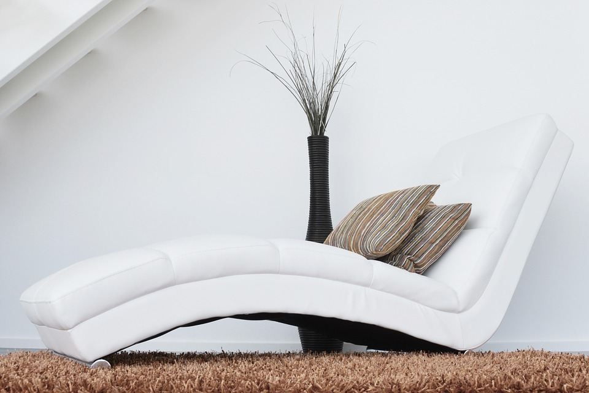

Stressed? Overwhelmed? Get started with meditation!
The first steps to a healthier mind
Sit comfortably on a chair or a pillow. You may close your eyes.
Focus on your breathing. Notice when you breathe in, then out.

If your attention slips, again pay attention to your breathing.
Repeat the above steps, be patient and kind to yourself.
Now you are meditating.

Consistency is key
Try to meditate on a regular basis. Find a place with few disturbances, at a time that suits you. Hopefully you can find time to meditate daily for best results. To begin, 10 minutes are enough!
In addition, keeping your back and neck straight is advised. Sitting with regular crossed legs might not be lenient on your back. Experiment to find what's most comfortable for you!
For next-level relaxation, be sure to check out our videos below!
A quicker meditation perfect for a short break
contact form